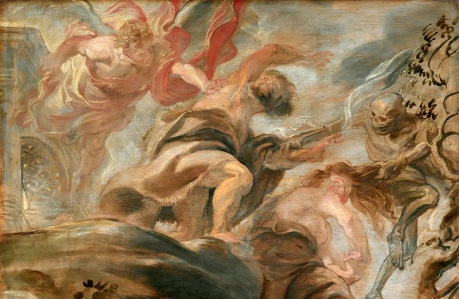

The gothic subculture emphasizes individualism, melancholy, and sensuality.
It may also include
an interest in occult and mystical themes.
Goths often express their feelings
and thoughts through art, music,
and poetry that reflect their
inner world and experiences.
The gothic subculture
draws inspiration from literary works such as the writings of Edgar Allan Poe, Bram Stoker's
"Dracula," Oscar Wilde, and other authors whose works often reflect the dark and mystical aspects of
human nature.
Philosophy and Worldview